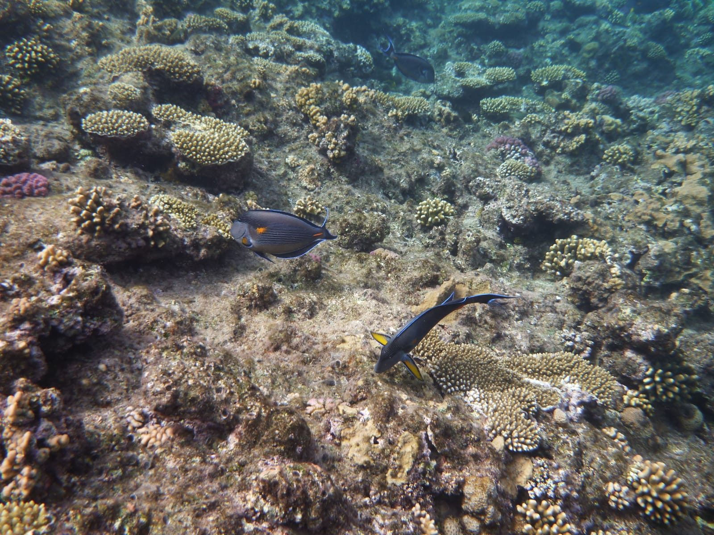

Explore the Red Sea
The Red Sea is one of the world's most fascinating marine environments, known for its crystal-clear waters, colorful coral reefs, and remarkable diversity of marine life. It offers visitors a unique opportunity to explore an underwater world filled with beauty, discovery, and adventure.
From vibrant fish and graceful sea turtles to playful dolphins and beautiful coral formations, the Red Sea offers an unforgettable experience for every visitor. Explore its marine life, discover the importance of its coral reefs, and learn how we can help protect this extraordinary environment.

Discover the Beauty Beneath the Waves
Coral reefs are one of the most important parts of the Red Sea ecosystem. They provide shelter and food for many marine species and help create a healthy environment beneath the waves.
What Awaits You?
The Red Sea is more than a beautiful destination. It is a world of discovery, adventure, and unforgettable marine experiences.
- Coral Reefs: Discover colorful coral reefs and learn why they are essential to marine life.
- Marine Life: Meet fascinating creatures such as sea turtles, dolphins, and colorful Red Sea fish.
- Red Sea Experience: Explore the beauty of the sea while learning how to enjoy it responsibly and respectfully.